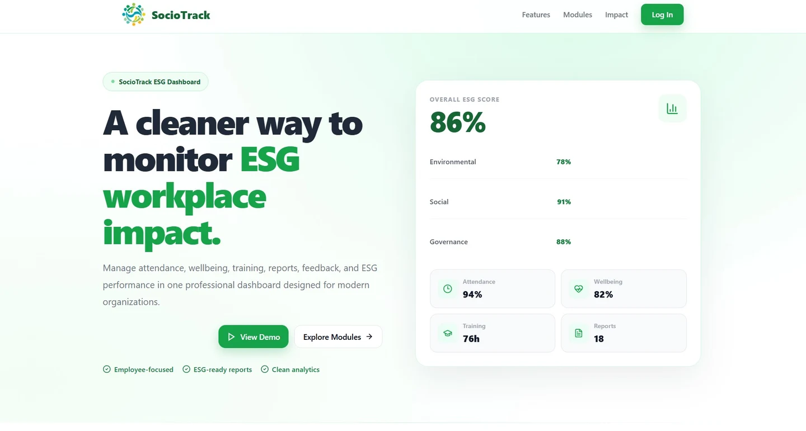

01 / FINAL-YEAR PROJECT · ESG SOCIAL MODULE FEATURED WORK
SocioTrack
↗
Attendance, wellbeing & training.See the thinking behind the social module.
The focus
Bringing employee attendance, wellbeing, reporting and training into a web-based social ESG monitoring prototype for SMEs.
My contribution
Developed the social-module prototype, including staff access and AI-assisted HR/admin task prioritization.